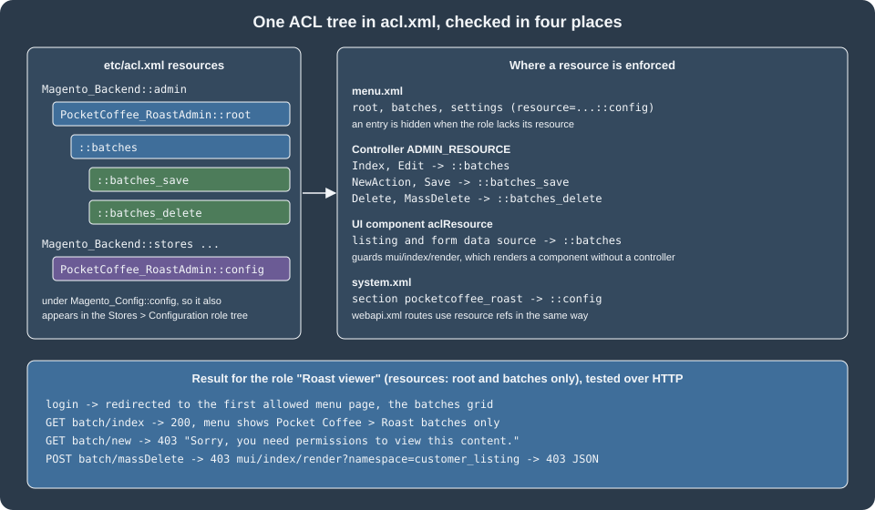

Admin Development
|
This content was generated with the assistance of AI and should be verified against the official documentation before being relied on in production. |
This page was written against Magento Open Source and Adobe Commerce 2.4.9 (general availability 2026-05-12) and checked on 2026-10-27. Every example was installed on Mage-OS 3.6.0, the Open Source distribution based on Magento 2.4.9, and exercised over HTTP as an administrator and as a restricted role, so the response codes, JSON and database rows below are observed results. The in-process PHP Admin extension model applies to Magento Open Source and to Adobe Commerce on-premises and on cloud infrastructure. Adobe Commerce as a Cloud Service (ACCS) accepts no PHP modules; Adobe lists the Admin UI SDK, which adds menus, pages and actions to the Admin from an App Builder application, among its extensibility tools, and the equivalent of this page for that edition is in Out-of-Process Extensibility. With Adobe IMS sign-in enabled the native two-factor authentication module is not used, a topic of Security and API Authentication.
The Admin is an ordinary Magento area (adminhtml) with its own router, its own layout and templates, and a security model
of secret keys, form keys and an ACL (access control list) of resources. This page builds the Admin side of the Pocket Coffee
shop: a "Pocket Coffee" menu with a grid and a form for roast batches (reference, origin, roast date, quantity in kilograms),
a configuration section "Roast settings" with a freshness window, a badge label and an encrypted API token for the roaster’s
system, and the ACL that decides who can see and change each part. It follows
Routing, Controllers, Blocks, Layouts and
Templates, which covers the storefront counterpart, and uses the table created with
Declarative Schema and Patches.
The module at a glance
| File | Role |
|---|---|
|
The module skeleton (see Module Anatomy); the |
|
The table |
|
The model, resource model and collection of the table. |
|
The resource tree. |
|
The menu entries. |
|
The Admin route |
|
The action classes: |
|
The two page layouts that place a UI component in the content area. |
|
The listing and the form. |
|
The form data provider, the row actions and the form buttons. |
|
The configuration section, its defaults, and the sensitive and environment-specific declarations. |
|
Typed access to the configuration and a command that prints it. |
Admin routes, controllers and the secret key
An Admin route is declared in etc/adminhtml/routes.xml with router id="admin"; the file location puts it in the adminhtml
area. The frontName becomes the first segment after the Admin URI, which is chosen at installation (admin_local on the test
installation, from --backend-frontname; the installer generates a random value when it is omitted).
<?xml version="1.0"?>
<config xmlns:xsi="http://www.w3.org/2001/XMLSchema-instance" xsi:noNamespaceSchemaLocation="urn:magento:framework:App/etc/routes.xsd">
<router id="admin">
<route id="pocketcoffee_roast" frontName="pocketcoffee_roast">
<module name="PocketCoffee_RoastAdmin"/>
</route>
</router>
</config>An Admin controller lives in Controller/Adminhtml/<Controller>/<Action>.php, extends Magento\Backend\App\Action and implements
an HTTP-method interface exactly as a storefront action does. The namespace is the access rule for the user type: the Adobe
documentation states that a controller in Controller\Adminhtml is accessible only to administrators, and that the controller
must override the ADMIN_RESOURCE constant to require a specific resource.
<?php
declare(strict_types=1);
namespace PocketCoffee\RoastAdmin\Controller\Adminhtml\Batch;
use Magento\Backend\App\Action;
use Magento\Backend\App\Action\Context;
use Magento\Backend\Model\View\Result\Page;
use Magento\Framework\App\Action\HttpGetActionInterface;
use Magento\Framework\View\Result\PageFactory;
/**
* GET {admin}/pocketcoffee_roast/batch/index: the listing page. The ACL resource below is checked by the
* Admin authentication plugin before execute() runs.
*/
class Index extends Action implements HttpGetActionInterface
{
public const ADMIN_RESOURCE = 'PocketCoffee_RoastAdmin::batches';
public function __construct(Context $context, private readonly PageFactory $resultPageFactory)
{
parent::__construct($context);
}
public function execute(): Page
{
/** @var Page $page */
$page = $this->resultPageFactory->create();
$page->setActiveMenu('PocketCoffee_RoastAdmin::batches');
$page->getConfig()->getTitle()->prepend(__('Roast batches'));
return $page;
}
}Three protections apply to every Admin request, and all three were observed on the test installation:
-
Secret key. With "Add Secret Key to URLs" enabled (the default), each Admin URL carries
/key/<hash>/computed for that controller path and the session. A request with a wrong key is redirected to the dashboard with HTTP 302. Links built withUrlInterface::getUrl()orMagento\Backend\Model\UrlInterfaceinclude the key automatically; the keys of the test run were read from the menu, the grid JSON and the form configuration, which is how any script has to obtain them. -
Form key. A POST without a valid
form_keyis redirected to the dashboard; the Admin writes the reason tovar/log/debug.logas "Request validation failed … BackendValidator". A GET against a POST-only action answered 404 and logged that the URI "cannot be accessed with GET method". -
ACL. The
ADMIN_RESOURCEof the class (orMagento_Backend::adminwhen it is not overridden) is checked against the role of the logged-in administrator beforeexecute()runs. A denied request returns HTTP 403 with the page "Sorry, you need permissions to view this content".
ACL: acl.xml
The ACL is a tree of resources. A role is a set of selected resources; the Admin shows the tree in System > Permissions >
User Roles > Role Resources, and a resource appears there only if some module declares it in etc/acl.xml.
<?xml version="1.0"?>
<config xmlns:xsi="http://www.w3.org/2001/XMLSchema-instance" xsi:noNamespaceSchemaLocation="urn:magento:framework:Acl/etc/acl.xsd">
<acl>
<resources>
<resource id="Magento_Backend::admin">
<resource id="PocketCoffee_RoastAdmin::root" title="Pocket Coffee" translate="title" sortOrder="80">
<resource id="PocketCoffee_RoastAdmin::batches" title="Roast batches" translate="title" sortOrder="10">
<resource id="PocketCoffee_RoastAdmin::batches_save" title="Save roast batches" translate="title" sortOrder="10"/>
<resource id="PocketCoffee_RoastAdmin::batches_delete" title="Delete roast batches" translate="title" sortOrder="20"/>
</resource>
</resource>
<resource id="Magento_Backend::stores">
<resource id="Magento_Backend::stores_settings">
<resource id="Magento_Config::config">
<resource id="PocketCoffee_RoastAdmin::config" title="Pocket Coffee roast settings" translate="title" sortOrder="80"/>
</resource>
</resource>
</resource>
</resource>
</resources>
</acl>
</config>Each <resource> has an id in the form Vendor_Module::name, a title (shown in the role tree, with translate="title"
to translate it), an optional sortOrder and an optional disabled attribute. The nesting is meaningful: selecting a child in
the role editor implies the parents, so the tree should follow the screens a person navigates (root, then the grid, then the
actions on it). The example separates view (batches) from save and delete, so a role can be limited to reading. The
config resource is declared under the existing Magento_Backend::stores > Magento_Backend::stores_settings >
Magento_Config::config branch so that it appears in the Configuration part of the role tree; the nested <resource> elements in the file only reference ancestors that other modules define, and the declarations
are merged.

The same resource id is used in four places, which the figure maps: the resource attribute of menu.xml entries, the
ADMIN_RESOURCE constant of controllers, the aclResource of UI components, and the <resource> of a system.xml section.
REST routes in webapi.xml use <resource ref="..."> in the same way (see
REST and GraphQL APIs).
Testing the ACL with a restricted role
A role "Roast viewer" holding only Magento_Backend::admin, PocketCoffee_RoastAdmin::root and
PocketCoffee_RoastAdmin::batches was created (a one-off script using the authorization role and rules models; the Admin role
editor does the same) with the user roastviewer. Logging in as that user over HTTP gave:
| Request | Result | Notes |
|---|---|---|
Login |
302 to the batches grid |
The Admin redirects to the first menu item the role may open. |
|
200 |
The menu showed only . |
|
200 with the JSON rows |
The listing’s |
|
403 |
|
|
403 |
|
|
403 |
A core listing that declares an |
The last two rows are the point of the aclResource setting: a UI component can be rendered on its own through
mui/index/render, without a controller, so a listing that exposes sensitive rows must declare the resource itself. The
Adobe authorization guide states exactly this.
The menu: menu.xml
<?xml version="1.0"?>
<config xmlns:xsi="http://www.w3.org/2001/XMLSchema-instance" xsi:noNamespaceSchemaLocation="urn:magento:module:Magento_Backend:etc/menu.xsd">
<menu>
<add id="PocketCoffee_RoastAdmin::root" title="Pocket Coffee" translate="title" module="PocketCoffee_RoastAdmin" sortOrder="80" resource="PocketCoffee_RoastAdmin::root"/>
<add id="PocketCoffee_RoastAdmin::batches" title="Roast batches" translate="title" module="PocketCoffee_RoastAdmin" sortOrder="10" parent="PocketCoffee_RoastAdmin::root" action="pocketcoffee_roast/batch/index" resource="PocketCoffee_RoastAdmin::batches"/>
<add id="PocketCoffee_RoastAdmin::settings" title="Roast settings" translate="title" module="PocketCoffee_RoastAdmin" sortOrder="20" parent="PocketCoffee_RoastAdmin::root" action="adminhtml/system_config/edit/section/pocketcoffee_roast" resource="PocketCoffee_RoastAdmin::config"/>
</menu>
</config>An <add> element creates an entry. Its attributes:
| Attribute | Meaning |
|---|---|
|
Unique id, conventionally the module name and a key; the id is also the argument of |
|
The label, with |
|
The module that owns the entry and translates its title. |
|
Position among siblings; lower numbers come first. |
|
The id of the parent entry; omitted for a top-level entry. |
|
The route path |
|
The ACL resource a role needs to see the entry. Without it the entry is visible to everyone who may log in. |
|
Show the entry only when another module is enabled or a configuration flag is set. |
|
Browser target and a tooltip for the entry. |
<update id="..."> changes attributes of an entry that another module added, and <remove id="..."/> deletes an entry; both are
resolved after all <add> elements are merged. The top-level entry of the example appeared on the dashboard HTML as the ids
menu-pocketcoffee-roastadmin-root, ...-batches and ...-settings.
The Adobe placement guidelines advise against icons and marketing in the primary navigation, and put settings of a connector under Stores > Settings > Configuration. The new top-level menu here is justified by a feature with its own data screen, and the settings entry is a convenience link to the same configuration section that also appears under Stores. A pure connector would have the configuration section only.
Configuration: system.xml and config.xml
The Stores > Settings > Configuration screen is generated from the system.xml files of all modules. The file has four levels:
tab (a left-hand grouping), section (a page), group (a collapsible block) and field.
<?xml version="1.0"?>
<config xmlns:xsi="http://www.w3.org/2001/XMLSchema-instance" xsi:noNamespaceSchemaLocation="urn:magento:module:Magento_Config:etc/system_file.xsd">
<system>
<tab id="pocketcoffee" translate="label" sortOrder="900">
<label>Pocket Coffee</label>
</tab>
<section id="pocketcoffee_roast" translate="label" type="text" sortOrder="10" showInDefault="1" showInWebsite="1" showInStore="1">
<label>Roast settings</label>
<tab>pocketcoffee</tab>
<resource>PocketCoffee_RoastAdmin::config</resource>
<group id="general" translate="label" type="text" sortOrder="10" showInDefault="1" showInWebsite="1" showInStore="1">
<label>General</label>
<field id="enabled" translate="label comment" type="select" sortOrder="10" showInDefault="1" showInWebsite="1" showInStore="0" canRestore="1">
<label>Show roast badge</label>
<source_model>Magento\Config\Model\Config\Source\Yesno</source_model>
<comment>Show the roast date on product pages.</comment>
</field>
<field id="freshness_days" translate="label comment tooltip" type="text" sortOrder="20" showInDefault="1" showInWebsite="1" showInStore="0" canRestore="1">
<label>Freshness window (days)</label>
<validate>validate-digits validate-greater-than-zero</validate>
<backend_model>PocketCoffee\RoastAdmin\Model\Config\Backend\PositiveInteger</backend_model>
<comment>Beans older than this are shown as "past peak".</comment>
<tooltip>The window starts on the roast date.</tooltip>
<depends>
<field id="enabled">1</field>
</depends>
</field>
<field id="badge_label" translate="label" type="text" sortOrder="30" showInDefault="1" showInWebsite="1" showInStore="1">
<label>Badge label</label>
<depends>
<field id="enabled">1</field>
</depends>
</field>
</group>
<group id="roaster_api" translate="label" type="text" sortOrder="20" showInDefault="1" showInWebsite="0" showInStore="0">
<label>Roaster system</label>
<field id="api_url" translate="label" type="text" sortOrder="10" showInDefault="1">
<label>API URL</label>
<validate>validate-url</validate>
</field>
<field id="api_token" translate="label comment" type="obscure" sortOrder="20" showInDefault="1">
<label>API token</label>
<backend_model>Magento\Config\Model\Config\Backend\Encrypted</backend_model>
<comment>Stored encrypted. Never exported by app:config:dump.</comment>
</field>
</group>
</section>
</system>
</config>The attributes and children used above, and the others of the schema system_file.xsd that matter:
| Element or attribute | Effect |
|---|---|
|
The scopes at which the field is editable; a field never shown at a scope cannot be overridden there, and a value read at that scope falls back to the default. |
|
Shows "Use system value" at the default scope so the value can go back to the |
|
The widget: |
|
The class that returns the options of a |
|
The class that processes the value on save and load (extends |
|
Client-side validation classes ( |
|
Help text under the field, and a tooltip. |
|
Shows the field only when another field of the group has a value. |
|
Stores the value at a path other than |
|
The ACL resource that gates the whole section. |
|
A block class that renders the field (custom widgets and buttons). |
|
Shows the field only if the named module is enabled. |
|
A short hint, a CSS class on the field, and permission to save an empty multiselect. |
|
The tab id; a new tab is declared with |
The defaults live in etc/config.xml, under <default> (and optionally <websites> and <stores> by code), at the same path
as the field:
<?xml version="1.0"?>
<config xmlns:xsi="http://www.w3.org/2001/XMLSchema-instance" xsi:noNamespaceSchemaLocation="urn:magento:module:Magento_Store:etc/config.xsd">
<default>
<pocketcoffee_roast>
<general>
<enabled>1</enabled>
<freshness_days>21</freshness_days>
<badge_label>Roasted on</badge_label>
</general>
<roaster_api>
<api_url>https://roaster.example.test/api</api_url>
</roaster_api>
</pocketcoffee_roast>
</default>
</config>Reading values in code
<?php
declare(strict_types=1);
namespace PocketCoffee\RoastAdmin\Model;
use Magento\Framework\App\Config\ScopeConfigInterface;
use Magento\Framework\Encryption\EncryptorInterface;
use Magento\Store\Model\ScopeInterface;
/**
* Typed access to the pocketcoffee_roast/* configuration. All reads go through ScopeConfigInterface, so values
* come from config.xml, config.php, env.php, core_config_data and environment variables in that order of precedence.
*/
class Settings
{
private const PATH_ENABLED = 'pocketcoffee_roast/general/enabled';
private const PATH_FRESHNESS = 'pocketcoffee_roast/general/freshness_days';
private const PATH_LABEL = 'pocketcoffee_roast/general/badge_label';
private const PATH_URL = 'pocketcoffee_roast/roaster_api/api_url';
private const PATH_TOKEN = 'pocketcoffee_roast/roaster_api/api_token';
public function __construct(
private readonly ScopeConfigInterface $scopeConfig,
private readonly EncryptorInterface $encryptor
) {
}
public function isEnabled(?int $storeId = null): bool
{
return $this->scopeConfig->isSetFlag(self::PATH_ENABLED, ScopeInterface::SCOPE_STORE, $storeId);
}
public function getFreshnessDays(?int $websiteId = null): int
{
return (int) $this->scopeConfig->getValue(self::PATH_FRESHNESS, ScopeInterface::SCOPE_WEBSITE, $websiteId);
}
public function getBadgeLabel(?int $storeId = null): string
{
return (string) $this->scopeConfig->getValue(self::PATH_LABEL, ScopeInterface::SCOPE_STORE, $storeId);
}
public function getApiUrl(): string
{
return (string) $this->scopeConfig->getValue(self::PATH_URL);
}
/**
* The stored value is encrypted by the Encrypted backend model; decrypt it only where the call is made.
*/
public function getApiToken(): string
{
$stored = (string) $this->scopeConfig->getValue(self::PATH_TOKEN);
return $stored === '' ? '' : $this->encryptor->decrypt($stored);
}
}The reads go through ScopeConfigInterface, with the scope type and the scope id: SCOPE_STORE for the store view,
SCOPE_WEBSITE for a website. isSetFlag() returns a boolean for Yes/No fields. The token is stored encrypted, so the class
decrypts it with EncryptorInterface at the point of use and never logs it. The command below prints the values; the token is
shown only as a length so that the output is safe to share.
<?php
declare(strict_types=1);
namespace PocketCoffee\RoastAdmin\Console\Command;
use PocketCoffee\RoastAdmin\Model\Settings;
use Symfony\Component\Console\Command\Command;
use Symfony\Component\Console\Input\InputInterface;
use Symfony\Component\Console\Output\OutputInterface;
class ShowSettingsCommand extends Command
{
public function __construct(private readonly Settings $settings, ?string $name = null)
{
parent::__construct($name);
}
protected function configure(): void
{
$this->setName('pocketcoffee:roast:settings')
->setDescription('Print the roast settings; the token is shown only as a length');
}
protected function execute(InputInterface $input, OutputInterface $output): int
{
$output->writeln('enabled: ' . ($this->settings->isEnabled() ? 'yes' : 'no'));
$output->writeln('freshness days: ' . $this->settings->getFreshnessDays());
$output->writeln('badge label: ' . $this->settings->getBadgeLabel());
$output->writeln('api url: ' . $this->settings->getApiUrl());
$output->writeln('api token length: ' . strlen($this->settings->getApiToken()));
return Command::SUCCESS;
}
}On the test installation the command printed, after the values below were saved (the token length is that of a placeholder):
$ bin/magento pocketcoffee:roast:settings
enabled: yes
freshness days: 14
badge label: Roasted on
api url: https://roaster.example.test/api
api token length: 21Saving values: the Admin and the CLI
The configuration screen and bin/magento config:set both pass the value through the field’s backend model. Several behaviours were checked:
-
The Admin form posted with
groups[general][fields][freshness_days][value]=abcwas accepted and stored: the<validate>element is evaluated only by the browser, so a script, a scripted import or acurlcall bypasses it. The server-side guard is the backend model in the next listing; with it in placebin/magento config:set pocketcoffee_roast/general/freshness_days abcfailed with "The freshness window must be a whole number of days greater than zero." andconfig:set ... 14printed "Value was saved." -
config:set --scope=websites --scope-code=base pocketcoffee_roast/general/freshness_days 10stored a website-scope row, andconfig:showreturned 14 at the default scope and 10 for the website. The field is shown at the website scope in the Admin as well, because ofshowInWebsite="1". -
The API token posted through the Admin was stored in
core_config_dataas an opaque string beginning0:3:(a key-version and cipher prefix followed by the ciphertext), never as the plain value, andconfig:show pocketcoffee_roast/roaster_api/api_tokenprinted******because the path is declared sensitive.
<?php
declare(strict_types=1);
namespace PocketCoffee\RoastAdmin\Model\Config\Backend;
use Magento\Framework\App\Config\Value;
use Magento\Framework\Exception\LocalizedException;
/**
* Server-side validation of the freshness window. The validate element of system.xml only runs in the browser.
*/
class PositiveInteger extends Value
{
public function beforeSave(): self
{
$value = trim((string) $this->getValue());
if (!ctype_digit($value) || (int) $value < 1) {
throw new LocalizedException(
__('The freshness window must be a whole number of days greater than zero.')
);
}
$this->setValue($value);
return parent::beforeSave();
}
}Sensitive and environment-specific values
Two lists in etc/di.xml classify configuration paths for the configuration-management commands:
<?xml version="1.0"?>
<config xmlns:xsi="http://www.w3.org/2001/XMLSchema-instance" xsi:noNamespaceSchemaLocation="urn:magento:framework:ObjectManager/etc/config.xsd">
<!-- Configuration values that must not be dumped to config.php, and values that differ per environment. -->
<type name="Magento\Config\Model\Config\TypePool">
<arguments>
<argument name="sensitive" xsi:type="array">
<item name="pocketcoffee_roast/roaster_api/api_token" xsi:type="string">1</item>
</argument>
<argument name="environment" xsi:type="array">
<item name="pocketcoffee_roast/roaster_api/api_url" xsi:type="string">1</item>
</argument>
</arguments>
</type>
<type name="Magento\Framework\Console\CommandListInterface">
<arguments>
<argument name="commands" xsi:type="array">
<item name="pocketcoffee_roast_settings" xsi:type="object">PocketCoffee\RoastAdmin\Console\Command\ShowSettingsCommand</item>
</argument>
</arguments>
</type>
<!-- The listing's data source: a collection over the table, exposed to the UI component framework. -->
<virtualType name="PocketCoffee\RoastAdmin\Model\ResourceModel\Batch\Grid\Collection"
type="Magento\Framework\View\Element\UiComponent\DataProvider\SearchResult">
<arguments>
<argument name="mainTable" xsi:type="string">pocketcoffee_roast_batch</argument>
<argument name="resourceModel" xsi:type="string">PocketCoffee\RoastAdmin\Model\ResourceModel\Batch</argument>
</arguments>
</virtualType>
<type name="Magento\Framework\View\Element\UiComponent\DataProvider\CollectionFactory">
<arguments>
<argument name="collections" xsi:type="array">
<item name="pocketcoffee_roastbatch_listing_data_source" xsi:type="string">PocketCoffee\RoastAdmin\Model\ResourceModel\Batch\Grid\Collection</item>
</argument>
</arguments>
</type>
</config>-
A sensitive path (keys, passwords, tokens, personal data) is excluded when the configuration is exported, so that it is not written into
app/etc/config.php, which is committed to version control. The exported file instead lists the environment variable (hereCONFIG__DEFAULT__POCKETCOFFEE_ROAST__ROASTER_API__API_TOKEN) that supplies the value in each environment. Adobe states that such values belong inapp/etc/env.php, which is not committed. -
An environment-specific path (URLs, hostnames, ports, modes, e-mail recipients) differs per system and is likewise kept out of the shared
config.php.
Both are plain TypePool arguments, keyed by the path, with the value 1. The declarations were validated against the object
manager schema and loaded; the export itself (bin/magento app:config:dump) rewrites app/etc/config.php and
app/etc/env.php of the installation and was not run on the shared test store. The related options config:set --lock-env and
--lock-config write a value into env.php or config.php and make the field read-only in the Admin; they were not run for
the same reason.
An environment variable named CONFIG__<SCOPE>__<PATH>, with the slashes of the path replaced by double underscores and all
upper case, overrides the stored value. On the test installation the variable CONFIG__DEFAULT__POCKETCOFFEE_ROAST__GENERAL__BADGE_LABEL set to "Roasted the" changed the badge label from the config.xml default "Roasted on" to "Roasted the" in the command output. The effective
configuration is cached, so the override showed only after cache:clean config ran with the variable set; the same cached
value kept being served after the variable was removed, until the configuration cache was cleaned again. Treat a change of
an environment variable as a deployment step that includes a configuration cache flush.
The data: table, model and collection
The grid reads the table of the declarative schema. The generated whitelist file is committed with the module; the command
that produced it was bin/magento setup:db-declaration:generate-whitelist --module-name=PocketCoffee_RoastAdmin.
<?xml version="1.0"?>
<schema xmlns:xsi="http://www.w3.org/2001/XMLSchema-instance" xsi:noNamespaceSchemaLocation="urn:magento:framework:Setup/Declaration/Schema/etc/schema.xsd">
<table name="pocketcoffee_roast_batch" resource="default" engine="innodb" comment="Pocket Coffee roast batches">
<column xsi:type="int" name="batch_id" unsigned="true" nullable="false" identity="true" comment="Batch ID"/>
<column xsi:type="varchar" name="reference" nullable="false" length="32" comment="Batch reference"/>
<column xsi:type="varchar" name="origin" nullable="false" length="32" comment="Origin"/>
<column xsi:type="date" name="roast_date" nullable="false" comment="Roast date"/>
<column xsi:type="decimal" name="quantity_kg" scale="2" precision="8" unsigned="true" nullable="false" default="0" comment="Quantity in kg"/>
<column xsi:type="smallint" name="is_active" unsigned="true" nullable="false" default="1" comment="Is active"/>
<column xsi:type="timestamp" name="created_at" nullable="false" default="CURRENT_TIMESTAMP" on_update="false" comment="Created at"/>
<constraint xsi:type="primary" referenceId="PRIMARY">
<column name="batch_id"/>
</constraint>
<constraint xsi:type="unique" referenceId="POCKETCOFFEE_ROAST_BATCH_REFERENCE">
<column name="reference"/>
</constraint>
<index referenceId="POCKETCOFFEE_ROAST_BATCH_ROAST_DATE" indexType="btree">
<column name="roast_date"/>
</index>
</table>
</schema>{
"pocketcoffee_roast_batch": {
"column": {
"batch_id": true,
"reference": true,
"origin": true,
"roast_date": true,
"quantity_kg": true,
"is_active": true,
"created_at": true
},
"index": {
"POCKETCOFFEE_ROAST_BATCH_ROAST_DATE": true
},
"constraint": {
"PRIMARY": true,
"POCKETCOFFEE_ROAST_BATCH_REFERENCE": true
}
}
}setup:upgrade created the table with the batch_id primary key, the unique key on reference and the index on roast_date.
<?php
declare(strict_types=1);
namespace PocketCoffee\RoastAdmin\Model;
use Magento\Framework\Model\AbstractModel;
use PocketCoffee\RoastAdmin\Model\ResourceModel\Batch as BatchResource;
class Batch extends AbstractModel
{
protected $_idFieldName = 'batch_id';
protected function _construct(): void
{
$this->_init(BatchResource::class);
}
}<?php
declare(strict_types=1);
namespace PocketCoffee\RoastAdmin\Model\ResourceModel;
use Magento\Framework\Model\ResourceModel\Db\AbstractDb;
class Batch extends AbstractDb
{
protected function _construct(): void
{
$this->_init('pocketcoffee_roast_batch', 'batch_id');
}
}<?php
declare(strict_types=1);
namespace PocketCoffee\RoastAdmin\Model\ResourceModel\Batch;
use Magento\Framework\Model\ResourceModel\Db\Collection\AbstractCollection;
use PocketCoffee\RoastAdmin\Model\Batch;
use PocketCoffee\RoastAdmin\Model\ResourceModel\Batch as BatchResource;
class Collection extends AbstractCollection
{
protected $_idFieldName = 'batch_id';
protected function _construct(): void
{
$this->_init(Batch::class, BatchResource::class);
}
}The example uses the model, resource model and collection triple directly, which is enough for an internal Admin screen. A
module whose data must be reachable from other modules or the API should expose a repository and data interfaces instead (see
Service Contracts and Repositories); the controllers would then
inject the repository rather than the resource model. The save() and load() methods of AbstractModel are deprecated, which
is why the controllers call $this->resource->save() and ->load().
The listing: UI component grid
The Admin grid is a UI component of type listing. The layout places it, the XML describes it, and the data comes from a
data provider named in the XML.
<?xml version="1.0"?>
<page xmlns:xsi="http://www.w3.org/2001/XMLSchema-instance" xsi:noNamespaceSchemaLocation="urn:magento:framework:View/Layout/etc/page_configuration.xsd">
<body>
<referenceContainer name="content">
<uiComponent name="pocketcoffee_roastbatch_listing"/>
</referenceContainer>
</body>
</page>The layout file is named after the route id, controller and action (pocketcoffee_roast_batch_index); the uiComponent
element renders the component with the same name as the file view/adminhtml/ui_component/pocketcoffee_roastbatch_listing.xml.
<?xml version="1.0"?>
<listing xmlns:xsi="http://www.w3.org/2001/XMLSchema-instance" xsi:noNamespaceSchemaLocation="urn:magento:module:Magento_Ui:etc/ui_configuration.xsd">
<argument name="data" xsi:type="array">
<item name="js_config" xsi:type="array">
<item name="provider" xsi:type="string">pocketcoffee_roastbatch_listing.pocketcoffee_roastbatch_listing_data_source</item>
</item>
</argument>
<settings>
<buttons>
<button name="add">
<url path="*/*/new"/>
<class>primary</class>
<label translate="true">Add roast batch</label>
</button>
</buttons>
<spinner>pocketcoffee_roastbatch_columns</spinner>
<deps>
<dep>pocketcoffee_roastbatch_listing.pocketcoffee_roastbatch_listing_data_source</dep>
</deps>
</settings>
<dataSource name="pocketcoffee_roastbatch_listing_data_source" component="Magento_Ui/js/grid/provider">
<settings>
<storageConfig>
<param name="indexField" xsi:type="string">batch_id</param>
</storageConfig>
<updateUrl path="mui/index/render"/>
</settings>
<aclResource>PocketCoffee_RoastAdmin::batches</aclResource>
<dataProvider class="Magento\Framework\View\Element\UiComponent\DataProvider\DataProvider" name="pocketcoffee_roastbatch_listing_data_source">
<settings>
<requestFieldName>id</requestFieldName>
<primaryFieldName>batch_id</primaryFieldName>
</settings>
</dataProvider>
</dataSource>
<listingToolbar name="listing_top">
<settings>
<sticky>true</sticky>
</settings>
<bookmark name="bookmarks"/>
<columnsControls name="columns_controls"/>
<filters name="listing_filters"/>
<massaction name="listing_massaction">
<action name="delete">
<settings>
<confirm>
<message translate="true">Delete the selected roast batches?</message>
<title translate="true">Delete batches</title>
</confirm>
<url path="pocketcoffee_roast/batch/massDelete"/>
<type>delete</type>
<label translate="true">Delete</label>
</settings>
</action>
</massaction>
<paging name="listing_paging"/>
</listingToolbar>
<columns name="pocketcoffee_roastbatch_columns">
<selectionsColumn name="ids">
<settings>
<indexField>batch_id</indexField>
</settings>
</selectionsColumn>
<column name="batch_id">
<settings>
<filter>textRange</filter>
<label translate="true">ID</label>
<sorting>asc</sorting>
</settings>
</column>
<column name="reference">
<settings>
<filter>text</filter>
<label translate="true">Reference</label>
</settings>
</column>
<column name="origin" component="Magento_Ui/js/grid/columns/select">
<settings>
<options class="PocketCoffee\RoastAdmin\Model\Source\Origin"/>
<filter>select</filter>
<dataType>select</dataType>
<label translate="true">Origin</label>
</settings>
</column>
<column name="roast_date" class="Magento\Ui\Component\Listing\Columns\Date" component="Magento_Ui/js/grid/columns/date">
<settings>
<filter>dateRange</filter>
<dataType>date</dataType>
<label translate="true">Roast date</label>
</settings>
</column>
<column name="quantity_kg">
<settings>
<filter>textRange</filter>
<label translate="true">Quantity (kg)</label>
</settings>
</column>
<column name="is_active" component="Magento_Ui/js/grid/columns/select">
<settings>
<options class="Magento\Config\Model\Config\Source\Yesno"/>
<filter>select</filter>
<dataType>select</dataType>
<label translate="true">Active</label>
</settings>
</column>
<actionsColumn name="actions" class="PocketCoffee\RoastAdmin\Ui\Component\Listing\Column\BatchActions">
<settings>
<indexField>batch_id</indexField>
</settings>
</actionsColumn>
</columns>
</listing>How the parts fit together:
-
Naming. The data source id (
pocketcoffee_roastbatch_listing_data_source) appears in theprovider, in thedeps, in thedataSourceanddataProvidernames, and as the key indi.xml. A mismatch in any of them typically leaves the grid on its loading spinner without an error message. -
Data source. The component
Magento_Ui/js/grid/providerrequests rows frommui/index/render(theupdateUrl) with the current search, filters, sorting and paging. On the serverMagento\Framework\View\Element\UiComponent\DataProvider\DataProviderturns them into collection filters, using the collection registered for its name inDataProvider\CollectionFactory. Thedi.xmlabove registers a virtual type ofSearchResult(a collection bound to the tablepocketcoffee_roast_batchand the resource model) under the keypocketcoffee_roastbatch_listing_data_source. This is the standard way to expose a custom table without writing a data provider class. -
Access.
<aclResource>on the data source is checked bymui/index/renderbefore the data provider runs (see the ACL section). The menu and controller checks do not cover this entry point. -
Toolbar.
bookmarkstores the user’s saved views (inui_bookmark),columnsControlsshows or hides columns,filtersrenders a filter control per column,pagingadds the pager, andmassactiondefines bulk actions; itsactionelements name a URL (pocketcoffee_roast/batch/massDelete), a confirmation and a type. The user’s selection is posted asselected[](orexcluded[]with a filter, for "select all"), with thenamespace. -
Columns. Each
columnnames a database field.filterchooses the filter widget (text,textRange,select,dateRange),options classsupplies the options of a select column,dataTypethe formatting,componentthe Knockout component andsortingthe default sort.selectionsColumnrenders the checkboxes;actionsColumnrenders the row actions from the class below.
<?php
declare(strict_types=1);
namespace PocketCoffee\RoastAdmin\Ui\Component\Listing\Column;
use Magento\Framework\UrlInterface;
use Magento\Framework\View\Element\UiComponent\ContextInterface;
use Magento\Framework\View\Element\UiComponentFactory;
use Magento\Ui\Component\Listing\Columns\Column;
/**
* Adds the Edit and Delete links to every row of the listing.
*/
class BatchActions extends Column
{
public function __construct(
ContextInterface $context,
UiComponentFactory $uiComponentFactory,
private readonly UrlInterface $urlBuilder,
array $components = [],
array $data = []
) {
parent::__construct($context, $uiComponentFactory, $components, $data);
}
public function prepareDataSource(array $dataSource): array
{
if (!isset($dataSource['data']['items'])) {
return $dataSource;
}
// By reference: the row arrays are changed in place.
foreach ($dataSource['data']['items'] as &$item) {
$id = $item['batch_id'];
$item[$this->getData('name')] = [
'edit' => [
'href' => $this->urlBuilder->getUrl('pocketcoffee_roast/batch/edit', ['id' => $id]),
'label' => __('Edit'),
],
'delete' => [
'href' => $this->urlBuilder->getUrl('pocketcoffee_roast/batch/delete', ['id' => $id]),
'label' => __('Delete'),
'confirm' => [
'title' => __('Delete %1', $item['reference']),
'message' => __('Are you sure you want to delete the batch %1?', $item['reference']),
],
'post' => true,
],
];
}
return $dataSource;
}
}<?php
declare(strict_types=1);
namespace PocketCoffee\RoastAdmin\Model\Source;
use Magento\Framework\Data\OptionSourceInterface;
/**
* Options of the origin select, shared by the grid filter and the form field.
*/
class Origin implements OptionSourceInterface
{
public function toOptionArray(): array
{
return [
['value' => 'ETH', 'label' => __('Ethiopia Yirgacheffe')],
['value' => 'COL', 'label' => __('Colombia Huila')],
['value' => 'BRA', 'label' => __('Brazil Cerrado')],
];
}
}The first version of BatchActions iterated foreach ($dataSource['data']['items'] ?? [] as &$item). The coalescing
operator produces a temporary array, so the changes made by reference were lost and the rows of the JSON response had no
actions key (the grid showed no Edit and Delete links) without any error. The isset check followed by a by-reference loop
over the real array, as listed above, produced the links. The row action delete carries "post": true and a confirm block,
which makes the grid send a POST with the form key after the dialog; the Delete controller accepts only POST.
Querying the listing as the grid does
The grid’s own request can be issued directly, which is also the quickest way to test a data provider. The URL of
mui/index/render carries the secret key; the JSON answer follows the filters:
curl -s -b admin.cookies -G "<render-url-with-key>" \
-H "X-Requested-With: XMLHttpRequest" -H "Accept: application/json" \
--data-urlencode "namespace=pocketcoffee_roastbatch_listing" \
--data-urlencode "paging[pageSize]=20" --data-urlencode "paging[current]=1" \
--data-urlencode "filters[origin]=COL"With two batches in the table (PC-2026-10-A from Ethiopia with 12.5 kg and PC-2026-10-B from Colombia with 8 kg) the
filters answered as follows:
| Parameters | Rows returned |
|---|---|
none |
2 (A and B) |
|
1 (B) |
|
1 (B, a LIKE filter from the |
|
1 (A) |
|
2 (B, then A) |
A search= keyword had no effect: the sample listing has no filterSearch element and the table no fulltext index, so there is
no keyword box. Adding one needs both.
The form: UI component form
<?xml version="1.0"?>
<page xmlns:xsi="http://www.w3.org/2001/XMLSchema-instance" xsi:noNamespaceSchemaLocation="urn:magento:framework:View/Layout/etc/page_configuration.xsd">
<body>
<referenceContainer name="content">
<uiComponent name="pocketcoffee_roastbatch_form"/>
</referenceContainer>
</body>
</page><?xml version="1.0"?>
<form xmlns:xsi="http://www.w3.org/2001/XMLSchema-instance" xsi:noNamespaceSchemaLocation="urn:magento:module:Magento_Ui:etc/ui_configuration.xsd">
<argument name="data" xsi:type="array">
<item name="js_config" xsi:type="array">
<item name="provider" xsi:type="string">pocketcoffee_roastbatch_form.pocketcoffee_roastbatch_form_data_source</item>
</item>
<item name="template" xsi:type="string">templates/form/collapsible</item>
</argument>
<settings>
<buttons>
<button name="back" class="PocketCoffee\RoastAdmin\Block\Adminhtml\Batch\Edit\BackButton"/>
<button name="delete" class="PocketCoffee\RoastAdmin\Block\Adminhtml\Batch\Edit\DeleteButton"/>
<button name="save" class="PocketCoffee\RoastAdmin\Block\Adminhtml\Batch\Edit\SaveButton"/>
</buttons>
<namespace>pocketcoffee_roastbatch_form</namespace>
<dataScope>data</dataScope>
<deps>
<dep>pocketcoffee_roastbatch_form.pocketcoffee_roastbatch_form_data_source</dep>
</deps>
</settings>
<dataSource name="pocketcoffee_roastbatch_form_data_source">
<settings>
<submitUrl path="pocketcoffee_roast/batch/save"/>
</settings>
<aclResource>PocketCoffee_RoastAdmin::batches</aclResource>
<dataProvider class="PocketCoffee\RoastAdmin\Ui\DataProvider\BatchForm" name="pocketcoffee_roastbatch_form_data_source">
<settings>
<requestFieldName>id</requestFieldName>
<primaryFieldName>batch_id</primaryFieldName>
</settings>
</dataProvider>
</dataSource>
<fieldset name="general">
<settings>
<label translate="true">Roast batch</label>
</settings>
<field name="batch_id" formElement="hidden">
<argument name="data" xsi:type="array">
<item name="config" xsi:type="array">
<item name="source" xsi:type="string">batch</item>
</item>
</argument>
<settings>
<dataType>text</dataType>
</settings>
</field>
<field name="reference" formElement="input" sortOrder="10">
<argument name="data" xsi:type="array">
<item name="config" xsi:type="array">
<item name="source" xsi:type="string">batch</item>
</item>
</argument>
<settings>
<dataType>text</dataType>
<label translate="true">Reference</label>
<validation>
<rule name="required-entry" xsi:type="boolean">true</rule>
<rule name="max_text_length" xsi:type="number">32</rule>
</validation>
</settings>
</field>
<field name="origin" formElement="select" sortOrder="20">
<argument name="data" xsi:type="array">
<item name="config" xsi:type="array">
<item name="source" xsi:type="string">batch</item>
</item>
</argument>
<settings>
<dataType>text</dataType>
<label translate="true">Origin</label>
<validation>
<rule name="required-entry" xsi:type="boolean">true</rule>
</validation>
</settings>
<formElements>
<select>
<settings>
<options class="PocketCoffee\RoastAdmin\Model\Source\Origin"/>
</settings>
</select>
</formElements>
</field>
<field name="roast_date" formElement="date" sortOrder="30">
<argument name="data" xsi:type="array">
<item name="config" xsi:type="array">
<item name="source" xsi:type="string">batch</item>
</item>
</argument>
<settings>
<dataType>text</dataType>
<label translate="true">Roast date</label>
<validation>
<rule name="required-entry" xsi:type="boolean">true</rule>
</validation>
</settings>
</field>
<field name="quantity_kg" formElement="input" sortOrder="40">
<argument name="data" xsi:type="array">
<item name="config" xsi:type="array">
<item name="source" xsi:type="string">batch</item>
</item>
</argument>
<settings>
<dataType>text</dataType>
<label translate="true">Quantity (kg)</label>
<validation>
<rule name="validate-number" xsi:type="boolean">true</rule>
<rule name="validate-greater-than-zero" xsi:type="boolean">true</rule>
</validation>
</settings>
</field>
<field name="is_active" formElement="checkbox" sortOrder="50">
<argument name="data" xsi:type="array">
<item name="config" xsi:type="array">
<item name="source" xsi:type="string">batch</item>
<item name="default" xsi:type="number">1</item>
</item>
</argument>
<settings>
<dataType>boolean</dataType>
<label translate="true">Active</label>
</settings>
<formElements>
<checkbox>
<settings>
<valueMap>
<map name="false" xsi:type="number">0</map>
<map name="true" xsi:type="number">1</map>
</valueMap>
<prefer>toggle</prefer>
</settings>
</checkbox>
</formElements>
</field>
</fieldset>
</form><?php
declare(strict_types=1);
namespace PocketCoffee\RoastAdmin\Ui\DataProvider;
use Magento\Ui\DataProvider\AbstractDataProvider;
use PocketCoffee\RoastAdmin\Model\ResourceModel\Batch\CollectionFactory;
/**
* Supplies the values of the edit form: the framework asks for getData() keyed by the primary field.
*/
class BatchForm extends AbstractDataProvider
{
public function __construct(
string $name,
string $primaryFieldName,
string $requestFieldName,
CollectionFactory $collectionFactory,
array $meta = [],
array $data = []
) {
$this->collection = $collectionFactory->create();
parent::__construct($name, $primaryFieldName, $requestFieldName, $meta, $data);
}
public function getData(): array
{
$result = [];
foreach ($this->collection->getItems() as $batch) {
$result[$batch->getId()] = $batch->getData();
}
return $result;
}
}The form XML declares, in order: the data source (the provider class, the submitUrl and the request field id), the buttons
(each is a class implementing ButtonProviderInterface that returns an array), and a fieldset with the fields. A field has a
formElement (input, select, date, checkbox, hidden, textarea, wysiwyg, fileUploader and others), a dataType,
a label, validation rules (required-entry, validate-number, validate-greater-than-zero, max_text_length; these are
client-side, like <validate> in system.xml) and an optional element block (<formElements>) for options and checkbox value
maps.
The data provider returns the values of the record named by id in the request, keyed by the primary field; the framework
extracts the matching record, and the response contained the values in the page configuration, for example
"data":{"batch_id":"1","reference":"PC-2026-10-A","origin":"ETH","roast_date":"2026-10-20","quantity_kg":"12.50","is_active":"1",...}
with the submit_url of the save action. The four button classes follow the same pattern:
<?php
declare(strict_types=1);
namespace PocketCoffee\RoastAdmin\Block\Adminhtml\Batch\Edit;
use Magento\Framework\UrlInterface;
use Magento\Framework\App\RequestInterface;
class GenericButton
{
public function __construct(
protected readonly UrlInterface $urlBuilder,
protected readonly RequestInterface $request
) {
}
public function getBatchId(): ?int
{
$id = (int) $this->request->getParam('id');
return $id ?: null;
}
public function getUrl(string $route = '', array $params = []): string
{
return $this->urlBuilder->getUrl($route, $params);
}
}<?php
declare(strict_types=1);
namespace PocketCoffee\RoastAdmin\Block\Adminhtml\Batch\Edit;
use Magento\Framework\View\Element\UiComponent\Control\ButtonProviderInterface;
class SaveButton extends GenericButton implements ButtonProviderInterface
{
public function getButtonData(): array
{
return [
'label' => __('Save batch'),
'class' => 'save primary',
'data_attribute' => [
'mage-init' => ['buttonAdapter' => ['actions' => [['targetName' => 'pocketcoffee_roastbatch_form.pocketcoffee_roastbatch_form', 'actionName' => 'save', 'params' => [false]]]]],
],
'sort_order' => 30,
];
}
}<?php
declare(strict_types=1);
namespace PocketCoffee\RoastAdmin\Block\Adminhtml\Batch\Edit;
use Magento\Framework\View\Element\UiComponent\Control\ButtonProviderInterface;
class DeleteButton extends GenericButton implements ButtonProviderInterface
{
public function getButtonData(): array
{
if (!$this->getBatchId()) {
return [];
}
return [
'label' => __('Delete'),
'class' => 'delete',
'on_click' => 'deleteConfirm(\'' . __('Are you sure you want to delete this batch?') . '\', \''
. $this->getUrl('*/*/delete', ['id' => $this->getBatchId()]) . '\', {data: {}})',
'sort_order' => 20,
];
}
}<?php
declare(strict_types=1);
namespace PocketCoffee\RoastAdmin\Block\Adminhtml\Batch\Edit;
use Magento\Framework\View\Element\UiComponent\Control\ButtonProviderInterface;
class BackButton extends GenericButton implements ButtonProviderInterface
{
public function getButtonData(): array
{
return [
'label' => __('Back'),
'on_click' => sprintf("location.href = '%s';", $this->getUrl('*/*/')),
'class' => 'back',
'sort_order' => 10,
];
}
}The action classes
<?php
declare(strict_types=1);
namespace PocketCoffee\RoastAdmin\Controller\Adminhtml\Batch;
use Magento\Backend\App\Action;
use Magento\Backend\App\Action\Context;
use Magento\Backend\Model\View\Result\Page;
use Magento\Framework\App\Action\HttpGetActionInterface;
use Magento\Framework\View\Result\PageFactory;
/**
* GET {admin}/pocketcoffee_roast/batch/edit/id/3, also used for "new" when there is no id.
*/
class Edit extends Action implements HttpGetActionInterface
{
public const ADMIN_RESOURCE = 'PocketCoffee_RoastAdmin::batches';
public function __construct(Context $context, private readonly PageFactory $resultPageFactory)
{
parent::__construct($context);
}
public function execute(): Page
{
/** @var Page $page */
$page = $this->resultPageFactory->create();
$page->setActiveMenu('PocketCoffee_RoastAdmin::batches');
$page->getConfig()->getTitle()->prepend(
$this->getRequest()->getParam('id') ? __('Edit roast batch') : __('New roast batch')
);
return $page;
}
}<?php
declare(strict_types=1);
namespace PocketCoffee\RoastAdmin\Controller\Adminhtml\Batch;
use Magento\Backend\App\Action;
use Magento\Backend\App\Action\Context;
use Magento\Framework\App\Action\HttpGetActionInterface;
use Magento\Framework\Controller\Result\Forward;
use Magento\Framework\Controller\Result\ForwardFactory;
/**
* "new" is a PHP reserved word, so the class is NewAction; the framework maps the URL segment "new" to it.
*/
class NewAction extends Action implements HttpGetActionInterface
{
public const ADMIN_RESOURCE = 'PocketCoffee_RoastAdmin::batches_save';
public function __construct(Context $context, private readonly ForwardFactory $forwardFactory)
{
parent::__construct($context);
}
public function execute(): Forward
{
return $this->forwardFactory->create()->forward('edit');
}
}<?php
declare(strict_types=1);
namespace PocketCoffee\RoastAdmin\Controller\Adminhtml\Batch;
use Magento\Backend\App\Action;
use Magento\Backend\App\Action\Context;
use Magento\Framework\App\Action\HttpPostActionInterface;
use Magento\Framework\Controller\Result\Redirect;
use Magento\Framework\Exception\LocalizedException;
use PocketCoffee\RoastAdmin\Model\BatchFactory;
use PocketCoffee\RoastAdmin\Model\ResourceModel\Batch as BatchResource;
/**
* POST {admin}/pocketcoffee_roast/batch/save. The Admin form key is validated by the framework.
*/
class Save extends Action implements HttpPostActionInterface
{
public const ADMIN_RESOURCE = 'PocketCoffee_RoastAdmin::batches_save';
public function __construct(
Context $context,
private readonly BatchFactory $batchFactory,
private readonly BatchResource $resource
) {
parent::__construct($context);
}
public function execute(): Redirect
{
$redirect = $this->resultRedirectFactory->create();
$data = (array) $this->getRequest()->getPostValue();
$id = (int) ($data['batch_id'] ?? 0);
$batch = $this->batchFactory->create();
try {
if ($id) {
$this->resource->load($batch, $id);
if (!$batch->getId()) {
throw new LocalizedException(__('This roast batch no longer exists.'));
}
}
$batch->setData([
'batch_id' => $id ?: null,
'reference' => trim((string) ($data['reference'] ?? '')),
'origin' => (string) ($data['origin'] ?? ''),
'roast_date' => (string) ($data['roast_date'] ?? ''),
'quantity_kg' => (float) ($data['quantity_kg'] ?? 0),
'is_active' => (int) ($data['is_active'] ?? 0),
]);
$this->resource->save($batch);
$this->messageManager->addSuccessMessage(__('The roast batch has been saved.'));
return $redirect->setPath('*/*/');
} catch (LocalizedException $e) {
$this->messageManager->addErrorMessage($e->getMessage());
} catch (\Throwable $e) {
$this->messageManager->addExceptionMessage($e, __('Something went wrong while saving the batch.'));
}
return $redirect->setPath('*/*/edit', ['id' => $id ?: null]);
}
}<?php
declare(strict_types=1);
namespace PocketCoffee\RoastAdmin\Controller\Adminhtml\Batch;
use Magento\Backend\App\Action;
use Magento\Backend\App\Action\Context;
use Magento\Framework\App\Action\HttpPostActionInterface;
use Magento\Framework\Controller\Result\Redirect;
use PocketCoffee\RoastAdmin\Model\BatchFactory;
use PocketCoffee\RoastAdmin\Model\ResourceModel\Batch as BatchResource;
/**
* POST {admin}/pocketcoffee_roast/batch/delete/id/3 from the row action or the form button.
*/
class Delete extends Action implements HttpPostActionInterface
{
public const ADMIN_RESOURCE = 'PocketCoffee_RoastAdmin::batches_delete';
public function __construct(
Context $context,
private readonly BatchFactory $batchFactory,
private readonly BatchResource $resource
) {
parent::__construct($context);
}
public function execute(): Redirect
{
$batch = $this->batchFactory->create();
$this->resource->load($batch, (int) $this->getRequest()->getParam('id'));
if ($batch->getId()) {
$this->resource->delete($batch);
$this->messageManager->addSuccessMessage(__('The roast batch has been deleted.'));
} else {
$this->messageManager->addErrorMessage(__('This roast batch no longer exists.'));
}
return $this->resultRedirectFactory->create()->setPath('*/*/');
}
}<?php
declare(strict_types=1);
namespace PocketCoffee\RoastAdmin\Controller\Adminhtml\Batch;
use Magento\Backend\App\Action;
use Magento\Backend\App\Action\Context;
use Magento\Framework\App\Action\HttpPostActionInterface;
use Magento\Framework\Controller\Result\Redirect;
use Magento\Ui\Component\MassAction\Filter;
use PocketCoffee\RoastAdmin\Model\ResourceModel\Batch\CollectionFactory;
/**
* POST from the listing's mass action: the Filter turns the "selected" or "select all" request into a collection.
*/
class MassDelete extends Action implements HttpPostActionInterface
{
public const ADMIN_RESOURCE = 'PocketCoffee_RoastAdmin::batches_delete';
public function __construct(
Context $context,
private readonly Filter $filter,
private readonly CollectionFactory $collectionFactory
) {
parent::__construct($context);
}
public function execute(): Redirect
{
$collection = $this->filter->getCollection($this->collectionFactory->create());
$count = 0;
foreach ($collection as $batch) {
$batch->delete();
$count++;
}
$this->messageManager->addSuccessMessage(__('A total of %1 roast batch(es) have been deleted.', $count));
return $this->resultRedirectFactory->create()->setPath('*/*/');
}
}Each class declares its own ADMIN_RESOURCE, which is what makes "view" and "change" separable. NewAction is the class name
for the URL segment new, because new is a reserved word in PHP; it forwards to Edit, so the form is the same. Save reads
the posted fields, loads the record when an id is present, saves it through the resource model, and answers with a redirect and a
message. A message manager call (addSuccessMessage) stores the text in the session for the next Admin page. MassDelete uses
Magento\Ui\Component\MassAction\Filter to translate the posted selection or the filter into a collection.
The observed behaviour of the actions, as the administrator over HTTP:
| Request | Result |
|---|---|
|
302 to the grid; the row appeared in the table with |
|
302 back to the edit page with an error message (the unique key rejects the row). The failed insert still consumed an
|
|
302 to the dashboard; nothing saved. |
|
404. |
|
404 (POST only). |
|
302 to the grid; the row was deleted. |
|
302 to the grid; both rows were deleted. |
Adding to existing Admin screens
Everything above creates new screens. To add a tab or a field to an existing screen (the product form, the customer form, the
order view) use the screen’s own extension point instead of copying it: a modifier class registered in the modifier pool of the
product form, a layout reference to the order view’s blocks, or the UI component merge shown for the category form in
EAV and Attributes, where one file in view/adminhtml/ui_component/ named like the
core component is merged into it. These were not run for this page beyond the category form of the other page.
Pitfalls
-
The ACL id must exist in
acl.xml. A typo inADMIN_RESOURCEorresourcelocks everyone but the full administrator out of the screen or the menu entry, and it appears in no role until it is declared. After editingacl.xml, clear the cache and re-save the roles that should receive the new resources: existing restricted roles do not gain them automatically. -
mui/index/renderis a second entry point. DeclareaclResourceon every listing and form that exposes rows. -
Client-side validation is not validation.
<validate>insystem.xmland the validation rules of a form field run in the browser. Validate again in the backend model or in the controller. -
Secrets in
config.xmlor in adi.xmldefault. Defaults are shipped with the module and visible to everyone; use the encrypted backend model and the sensitive list, and set the value per environment. -
Changing the
nameof a UI component or data source after release. Saved bookmarks (user views) inui_bookmarkrefer to the namespace; a rename drops them. -
A grid with no
indexFieldor with a differentprimaryFieldNameshows the rows but breaks selection and row actions. -
Non-unique
sortOrdervalues inmenu.xmlgive an unstable menu order between environments. -
Controllers named after reserved words.
New,ListandPrintare not valid class names; useNewAction,ListAction,PrintAction. -
Template path in the Admin differs. Admin templates and layouts are under
view/adminhtml/, andview/base/is merged into both areas. -
Locked values. A value written with
config:set --lock-envor--lock-configis read-only in the Admin; remember that when a merchant reports that "the field does not save".
What was and was not run
On Mage-OS 3.6.0 (Magento 2.4.9 base, PHP 8.5.12, MariaDB 11.8): php -l and phpcs --standard=Magento2 on the module (no
errors), XSD validation of every XML file of the module (module.xml, db_schema.xml, acl.xml, menu.xml, routes.xml,
system.xml, config.xml, di.xml, the two layouts and the two UI components), module:enable, the whitelist generation,
setup:upgrade, cache:flush, the Admin sign-in and the requests listed above as the full administrator and as the restricted
role, the configuration screen (rendered fields, type="obscure" as a password input, depends), configuration saves
through the Admin and the CLI, the environment variable override and the settings command. Not run: a real browser (the
Knockout rendering of the grid and the form, the buttonAdapter of the Save button, inline editing and bookmarks), the Admin
two-factor authentication (the module is disabled on the test store), Adobe IMS sign-in, app:config:dump, --lock-env and
--lock-config, the role editor UI, the Admin UI SDK and any Adobe Commerce-only Admin feature.